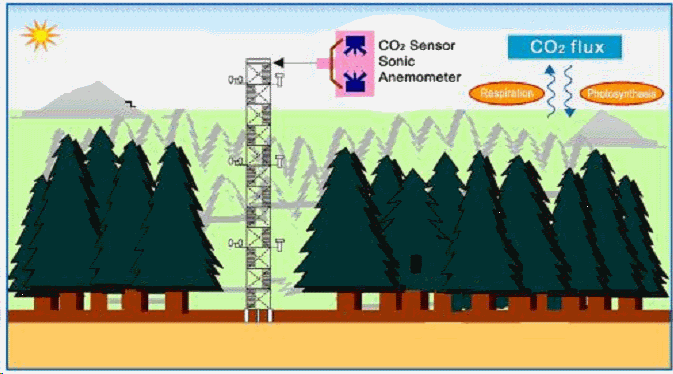
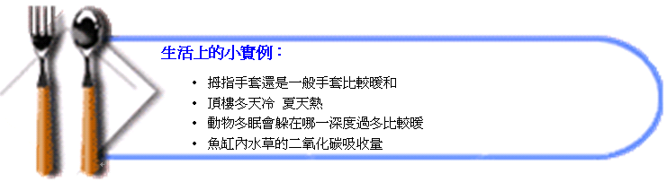
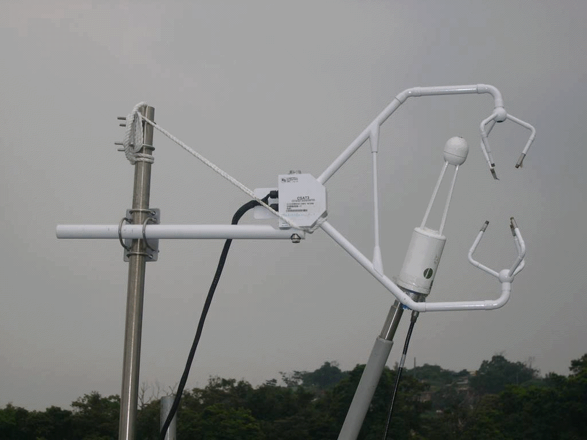
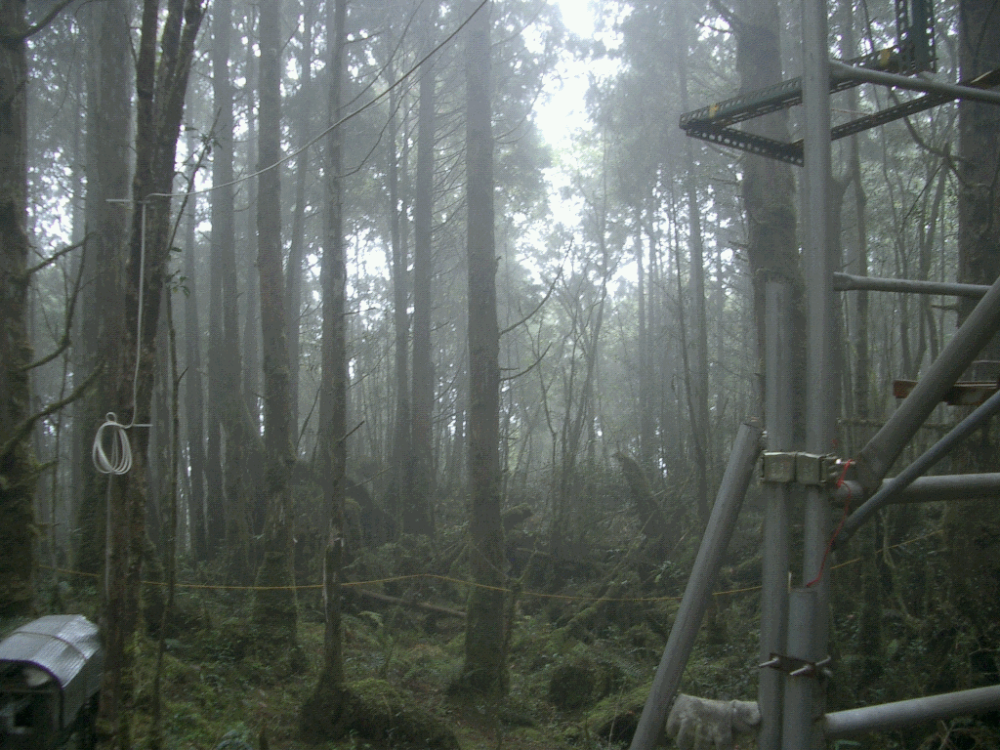
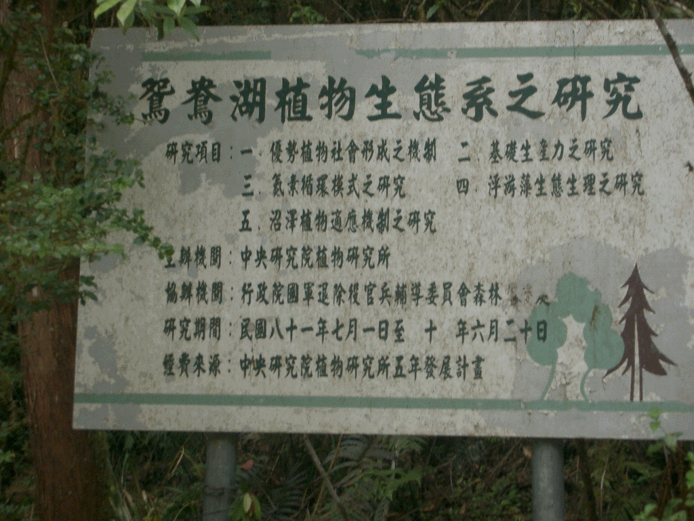
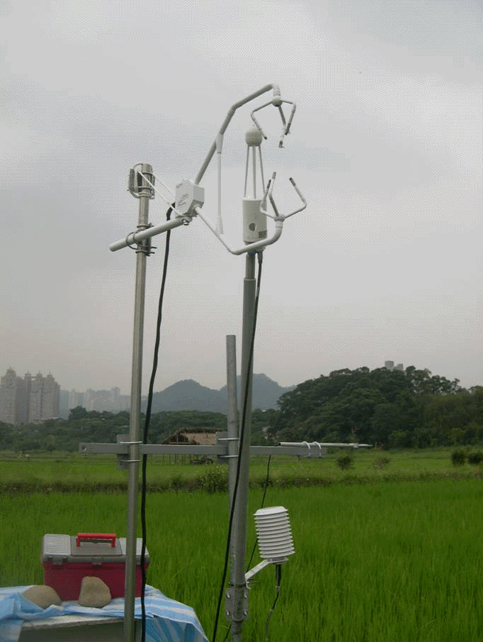
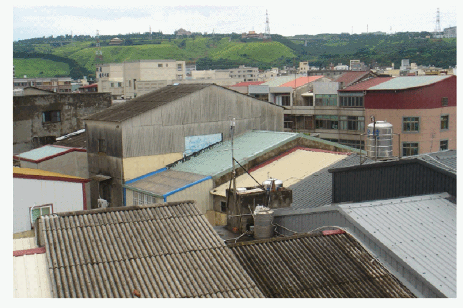
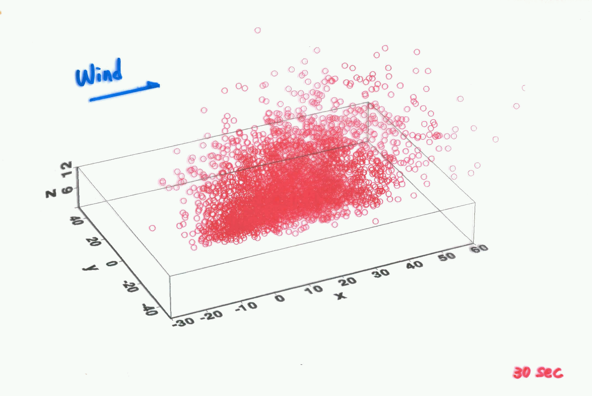
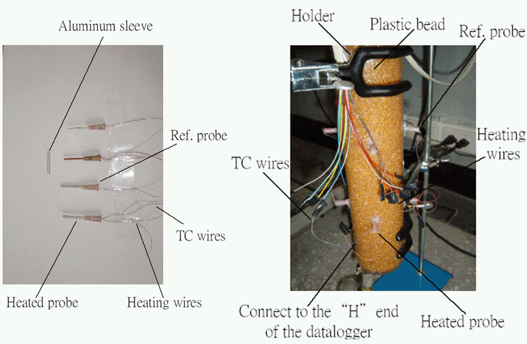
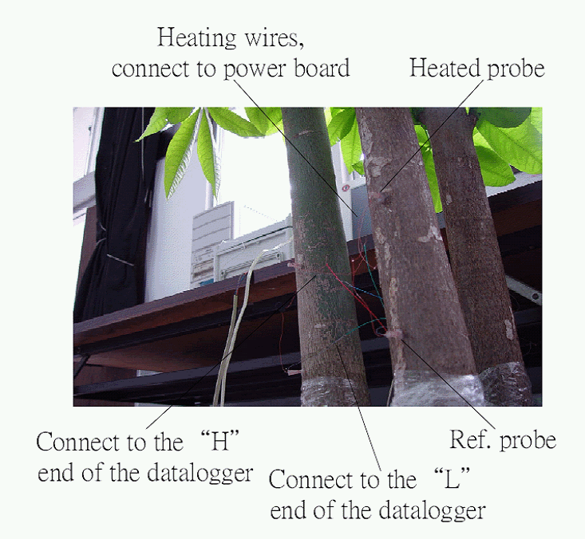

環境生物物理簡介
環境生物物理學主要是研究生物(包括動物與植物)與其所生存的生態系之間物質(如 CO2和CH4)與能量(如可感熱、蒸發散熱 )的交換情形及機制。其中，環境物理因子像是太陽輻射、溫度、及溼度等；而環境生物物理機制則包括像二氧化碳吸收、蒸散、及生物體表面溫度等。
環境生物物理學可應用到的方面：
1. 小至建築物的微氣候、農作物的栽培與生產等2. 中到空氣污染、區域氣候研究等
3. 大到全球環境變遷的預測等

研究課題
1. 生態系二氧化碳吸收能力 – (森林、水稻、草地、生質能源作物)
2. 地表通量 (熱通量、水氣通量等) 量測方法研究
3. 都市街谷熱流研究
4. 植物種子隨風擴散研究
5. 樹液探針研發
6. 二氧化碳減量研究
7. 生態系溫室氣體 (CO2 CH4 N2O) 排放研究
研究設備
主要研究設備：渦流相關系統(Eddy-correlation system)
目前最先進的二氧化碳吸收/排放研究設備
其他研究設備
1. 超音波風速計 (Ultrasonic 81000、CSAT3)
2. 溫濕度計
3. 二氧化碳分析儀 (LI7500、LI7000、LI840)
4. 淨輻射計
5. 樹葉面積指數儀
6. 數據傳輸器 (CR23X、CR3000)
7. 土壤熱流計
8. 土壤溫度計
9. 紅外線表面溫度計
10. 光合作用輻射計
11. 樹液探針
現地實驗
棲蘭山鴛鴦湖通量監測網  |
||
水稻田通量檢測 |
城市街谷熱流實驗 |
物質擴散模擬 |
樹液探針與人工樹 |
||
研究生所獲得之訓練
1. 環境生物物理專業訓練
2. 程式設計(Fortran Matlab)
3. 統計學
4. 英文能力(托福通過標準、由老師支付檢測費用)
5. 出席國際會議報告訓練(AGU、Asia Flux)